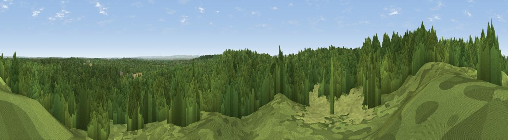

Viewpoint near Bagshot
#36516 in England · top 22% of its area beats it · near Bagshot · path 126 mWhere it is
The exact computed spot (SU 89825 62625). Click the marker for map links.
Public access: the nearest public right of way is about 126 m away — the final stretch may cross private land. Computed from Natural England's CRoW access layer and OpenStreetMap rights of way — not the legal definitive map. Always verify locally.
The view, rendered

A 360° render of this exact spot computed from the terrain model, tree cover and land cover — summer colours, afternoon light, calibrated against photographs of famous viewpoints. Real trees, hedges and buildings will differ in detail.
The panorama
Grey silhouette: terrain skyline in each direction (720 bearings, Earth curvature and refraction included). Dashed green: skyline with trees (+15 m) and buildings (+8 m) as obstacles. Blue strip: how far the ground is visible on each bearing.
Where the view opens
Wedge length = distance to the farthest visible ground on that bearing (vegetation-aware). Rings at 10, 25 and 50 km.
What fills the view
79% woodland · 11% grassland · 10% built-up
Angular shares of the visible panorama (visual magnitude), not map area. Landscape diversity 0.30 (0–1 Shannon).
Key numbers
More beautiful places nearby
The staircase of upgrades: each row has a higher view potential than everything closer. Driving times are estimates from straight-line distance, calibrated against real road routing — check an actual route before setting out.
| Place | Direction | Drive | Score |
|---|---|---|---|
| High Curley Hill | SE · 2 km | ~5 min | 38.5 |
| Viewpoint near Upper Hale | SSW · 14 km | ~25 min | 46.8 |
| Viewpoint near Wanborough | SSE · 15 km | ~27 min | 48.1 |
| Viewpoint near Compton | SSE · 15 km | ~27 min | 49.4 |
| Horsedown Common | SW · 20 km | ~33 min | 54.8 |
| Viewpoint near Hambledon | SSE · 25 km | ~41 min | 57.7 |
| Viewpoint near Hascombe | SSE · 26 km | ~41 min | 62.0 |
| Viewpoint near Ewhurst | SE · 27 km | ~43 min | 63.9 |
51.35561, -0.71140 · source: screening · position refined by local search. Computed location — check access rights before visiting.